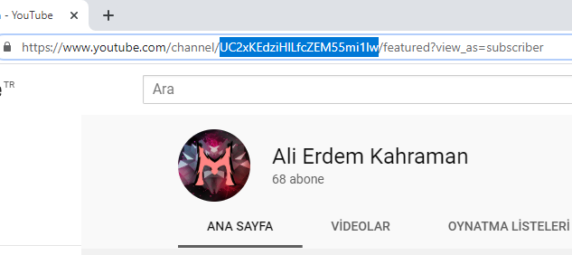
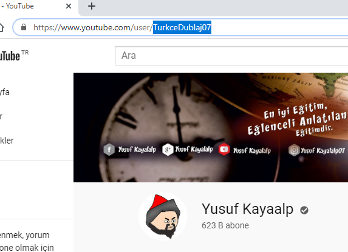

Youtube kanallarını bir birinden ayırt etmek için her youtube kanalının idsi vardır.
Bizimde hangi kanaldan veri çekeceğimizi bilmemiz için kanalınızın idsiyle işlem yapmalısınız.
Aşağıdaki fotoğraflardan youtube kanal idsinin nasıl alabileceğini bir bakışta öğrenebilirsiniz.

